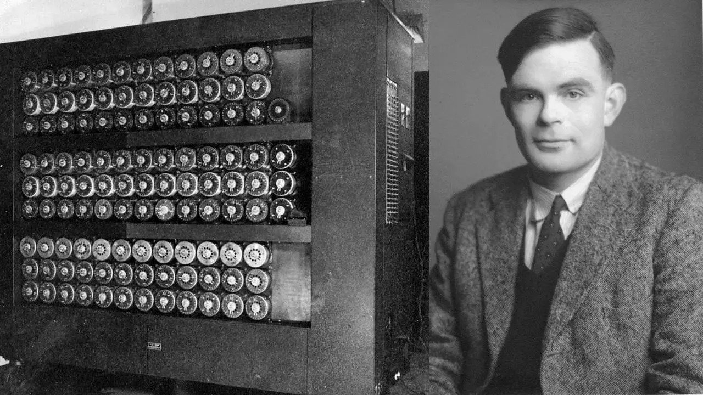

TIMELINE
EARLY CONCEPTION OF AI
Early 20th century
Scientists from various specialties were involved in
1944
The first neural network models were developed by Neuropsychologist and mathematician,
Since 1941 or earlier
Famous mathematician Alan Turing, was tasked with
1950
To test the machine of intelligence, the “imitation game”

1952
Arthur Samuel, who coined the phrase “machine learning”, developed
BIRTH OF AI
1956
Artificial network workshop, Dartmouth Summer Research, was held. Researchers specialising in
Suggestion of a new academic discipline: artificial intelligence was made among many
1966
A therapist chatbot, ELIZA, was released by Joseph Weizenbaum ( Dhamani, 2024).
VIDEO
1970 - 80s
Due to Natural Language Processing(NLP), symbolic systems
During this duration, there was less funding and research breakthroughs.
1990s
New standards on statistical models were beginning
First repetitive and deep neural networks were
RISE OF AI
1990s and 2000s
Computer processing greatly matured (Toloka, 2024)
2006
First commercially successful NLP system, Google Translate ( Dhamani, 2024)
VIDEO
2010s
Being based on deep learning techniques, generative artificial
2018
GPT-1, first Generative Pre-trained Transformer model,
2019
Google releases BERT, an additional large Transformer model, becoming another
2020
Release of GPT-3 ( Dhamani, 2024)
2022
Launch of ChatGPT by OpenAI, fame was achieved overnight ( Dhamani, 2024)
November 2022
OpenAI achieved a new level of artificial intelligence with the combination of